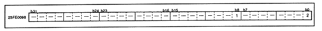

Table 3.6 Timer 1 occurrence selection
T1MD | Generation selection contents |
0 | Interrupt occurs on every line. |
1 | This only occurs on the line specified by timer 0. |
Table 3.7 Timer operation contents
TENB | Timer operation |
0 | Timer operation OFF |
1 | Timer operation ON |